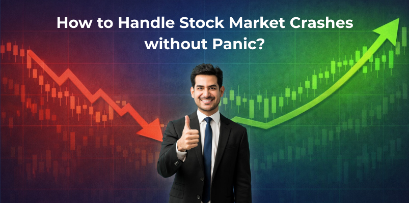

How to Handle Stock Market Crashes without Panic

When headlines are filled with war, global tension, and falling indices, it is natural to feel anxious about your investments. A decline in stocks can make investors uncomfortable, as portfolio values drop and negative news dominates conversations.
However, keep in mind that market crashes are not new to us, and it won’t be permanent. They are part of the economic cycle, and outcomes depend largely on how you respond. In this blog, you will learn practical ways to handle stock market crashes calmly and make better long term investment decisions.
1. Accept That Volatility is a Friend
Anyone who chooses to invest in equity should clearly understand that fluctuations are part of the journey. Markets move in cycles. They rise during optimism and fall during uncertainty. Wars, policy changes, global slowdowns, and geopolitical risks have always impacted short term prices.
As Benjamin Graham wisely observed, “the biggest challenge for an investor is often their own emotions”. In difficult times, fear feels louder than logic.
Crashes test patience. They force you to ask whether you truly believe in long term investing or were only comfortable during bull runs. The right mindset at this stage is calm observation, not impulsive action.
2. Zoom Out Before You React
History shows that markets have always moved in cycles. Every major correction in the past felt like the beginning of something worse while it was happening. Yet, over time, recoveries followed.
It means recognizing that panic often creates opportunity. When quality companies trade at lower valuations due to external fear, disciplined investors benefit later. The key is perspective. A 20 percent fall looks terrifying on a one month chart.
If you extend that chart to ten or fifteen years, many such falls look like temporary dents in a long upward journey.
History has shown us that stock markets have recovered from global wars, financial crises, and pandemics. Investors who sold their stocks during the panic period found it difficult to get back in at the right time. On the other hand, those who stayed patient participated in eventual recoveries.
3. The Real Power of SIP
One of the most powerful tools during volatile periods is discipline. Investors who use mutual funds often rely on systematic investing rather than trying to time the market.
If you are doing a SIP in a mutual fund, market crashes actually work in your favor over time. When markets fall, your fixed investment amount buys more units. When markets recover, those extra units contribute significantly to gains.
This concept is called rupee cost averaging. You do not need to predict tops and bottoms. You just need consistency. Many investors stop their SIPs during crashes because they are scared.
However, stopping systematic investments during a downturn can break long term compounding. Consistency during uncertainty often makes a significant difference over a full market cycle.
4. Manage Risk the Right Way
Crashes hurt more when portfolios are unbalanced. If someone has invested all their savings in one sector or has taken loans to invest, volatility becomes unbearable.
Risk management is not about avoiding equity. It is about allocation. Diversification across sectors and asset classes reduces damage during sharp corrections. Even great investors emphasize margin of safety.
This principle simply means leaving room for uncertainty in your decisions. Avoid concentrating too heavily on one idea. Stay away from taking out large loans in an attempt to maximize profits. In bull markets, a balanced portfolio might not grow fastest, but in bear markets, it provides better protection.
5. Focus on Cash Flow and Goals
Stock prices fluctuate daily. Your financial goals usually do not.
If you are investing for retirement 20 years away, a temporary decline today does not change the goal. If you are investing for a child’s education 10 years away, you still have time for recovery.
What matters more is:
- Are you saving consistently?
- Are you aligned with your risk capacity?
- Do you have an emergency fund to avoid forced selling?
When investors are in need of liquidity, they are forced to sell at the worst time. It is best to have your emergency funds separate from your long term investments.
6. Think Like a Business Owner
If you focus only on falling prices, panic grows. If you focus on long term earnings potential, competitive advantages, and management quality, you think more rationally.
Market crashes separate traders from investors. Traders react to noise. Investors evaluate fundamentals.
When you purchase shares, you are essentially purchasing a stake in a company. You need to ask yourself if the business model of the company has fundamentally changed or whether the price has fallen mainly due to temporary fear. This is a big change in thinking and reduces stress.
7. Use Volatility as a Learning Phase
Every crash teaches something about risk tolerance.
Some investors realize they were overexposed. Others are discovered to be more resilient than they thought. Look at volatility not as a punishment but as feedback.
Take a look at your allocation. Reallocate if necessary. Strengthen your emergency fund. Improve your understanding of the businesses or funds you own. Each correction can make you a better investor for the next cycle.
8. Prepare for the Recovery
Recoveries often begin when news still feels negative. Waiting for complete clarity usually means entering after prices have already moved up.
Instead of trying to predict exact bottoms, focus on preparation. Build a disciplined approach. Continue systematic investments. Review quality opportunities with patience.
Keep some liquidity ready so you can act confidently when valuations become attractive. Most importantly, remind yourself that markets reward patience far more than prediction.
Conclusion
Market crashes can feel overwhelming when they happen, but they are simply phases in a much longer journey. Investors who succeed are those who manage to remain calm and keep their eyes on the goal rather than reacting to every headline.
You do not need to predict the perfect time to invest. You need discipline, patience, and the right structure. If you are beginning your journey or planning to manage your investments directly, you can open a free demat account through Integrated and start building a long term portfolio with structure and clarity.
Disclaimer - The information provided in this blog is for educational and informational purposes only and should not be considered investment advice or a recommendation to buy or sell any financial instruments.